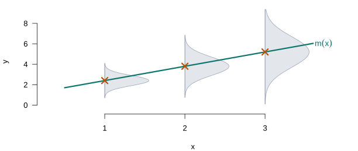
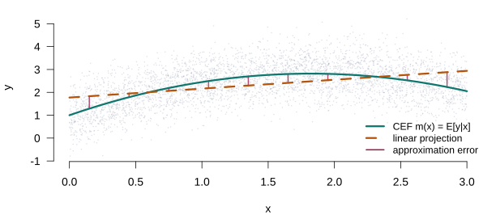

Conditional Expectation, Linear Projection, and the Linear Regression Model
Lecture 2
0.1 Before any model
Where this lecture sits
DGPIdentificationEstimationAsymptoticsInference
Computation
This lecture answers the first of the three questions, and only that one. By the end we will know under exactly what conditions the parameter of a linear model can be learned from data — and we will not have written down a single estimator. Estimation is Lecture 3; inference waits until Lecture 6.
That separation is deliberate and will be repeated all semester. Identification is a property of the population and the model; it is settled before any data are collected, and no estimator can repair its failure.
The question of this lecture
We observe a sample and want to say something about the relationship between \(y\) and \(\mathbf{x}\). The instinct is to write down a model. Resist it for a moment, and ask instead: what can be said before assuming anything at all?
What is the DGP?
\(\{(y_i, \mathbf{x}_i)\}_{i=1}^n\) are i.i.d. draws from a population distribution \(F\), with \(y_i\) scalar and \(\mathbf{x}_i\) a \(K \times 1\) vector.
That is the entire assumption. No linearity, no exogeneity, no functional form.
Two objects, and why the order matters
It turns out that a joint distribution alone gives us two well-defined objects: the conditional expectation function, which describes the average of \(y\) at each value of \(\mathbf{x}\), and the linear projection, which is the best straight-line summary of that relationship. Neither requires a model. Both exist as soon as a few moments are finite.
Only afterwards do we impose the linear regression model — and the model turns out to be precisely the assumption that these two objects coincide.
Most treatments run the other way, opening with the assumptions A1–A6 and inviting the belief that linearity is where econometrics begins. Taking the population objects first costs one extra section and repays it many times over: when exogeneity fails in Lecture 10, the student already knows what survives, because they know what was definitional and what was assumed.
0.2 The conditional expectation function
What we actually want to know
A model builder is rarely interested in the joint distribution of \(y\) and \(\mathbf{x}\) as such. The interest is conditional: how does the distribution of earnings shift as schooling changes? And usually not the whole conditional distribution, but one feature of it — most often the mean, sometimes a quantile, occasionally the variance.
Linear regression is about the conditional mean, so that is where we start.
The CEF is the line through the crosses. Everything else the conditional distributions contain — here, a spread that widens with \(x\) — is discarded by construction. That discarded part becomes heteroskedasticity in Lecture 7.
Definition 1 (Conditional expectation function) The conditional expectation function (CEF) is \[m(\mathbf{x}) = \E[y \mid \mathbf{x}],\] the mean of \(y\) in the subpopulation with covariates equal to \(\mathbf{x}\). It exists whenever \(\E|y| < \infty\), and involves no modelling assumption whatever.
The CEF error
Whatever \(m\) happens to be, we can always define the deviation of \(y\) from it. Write \(\varepsilon = y - m(\mathbf{x})\), so that \(y = m(\mathbf{x}) + \varepsilon\). This looks like a regression equation, and it is worth being clear immediately about how little it claims.
Theorem 1 (Properties of the CEF error)
- \(\E[\varepsilon \mid \mathbf{x}] = 0\)
- \(\E[\varepsilon] = 0\)
- \(\E[h(\mathbf{x})\,\varepsilon] = 0\) for any \(h\) with \(\E|h(\mathbf{x})\varepsilon| < \infty\)
Proof.
- holds because \(m(\mathbf{x})\) is a function of \(\mathbf{x}\), so it passes through the conditional expectation. (2) is (1) plus the law of iterated expectations. (3) follows by conditioning on \(\mathbf{x}\) first, which reduces the expression to \(\E[h(\mathbf{x}) \cdot 0]\). \(\square\)
Nothing here has been assumed
Read the theorem again and notice what it is not. The equation \(y = m(\mathbf{x}) + \varepsilon\) with \(\E[\varepsilon \mid \mathbf{x}] = 0\) holds by construction, for any joint distribution with a finite mean. It has no empirical content: nothing has been assumed, and consequently nothing can be tested.
This matters because the same equation reappears in a few slides as the linear regression model, where it does carry content. The difference will be whether \(m(\mathbf{x})\) is left unrestricted or required to be linear.
Confusing “the error has conditional mean zero by construction” with “the error has conditional mean zero by assumption” is exactly what makes the exogeneity assumption look either vacuous or mysterious. It is neither.
Why the mean, and not something else?
The choice of the conditional mean can look arbitrary — why not the median? There is a precise answer: among all functions of \(\mathbf{x}\), the CEF is the one that predicts \(y\) best under squared loss. If you are going to summarise \(y\) by a single number at each \(\mathbf{x}\), and you penalise mistakes quadratically, the CEF is the summary you want.
Theorem 2 (The CEF minimises mean squared error) Among all \(g\) with \(\E[g(\mathbf{x})^2] < \infty\), \[m(\mathbf{x}) = \argmin_{g} \E\big[(y - g(\mathbf{x}))^2\big].\]
Proof. Add and subtract \(m(\mathbf{x})\) inside the square. The cross term vanishes by Theorem 1(3), since \(m - g\) is a function of \(\mathbf{x}\), leaving \[\E\big[(y - g(\mathbf{x}))^2\big] = \E[\varepsilon^2] + \E\big[(m(\mathbf{x}) - g(\mathbf{x}))^2\big] \ge \E[\varepsilon^2],\] with equality iff \(g = m\) almost surely. \(\square\)
A pattern to notice
Theorem 2 defines the CEF as the solution to a minimisation problem — a minimisation over a function, which is more than we can do with a finite sample. Least squares, next lecture, solves the sample version of the same problem restricted to linear \(g\). That is the entire relationship between the population object and the estimator, and it is the first instance of a pattern that will organise the course.
0.3 Linear projection
A more modest target
The CEF is unknown and generally nonlinear, so estimating it directly is hard. A more modest goal is the best linear approximation to \(y\) — and the striking thing is that this object exists under conditions barely stronger than those for the CEF itself.
Definition 2 (Linear projection coefficient) Suppose \(\E[y^2] < \infty\), \(\E\|\mathbf{x}\|^2 < \infty\), and \(\bQ_{xx} = \E[\mathbf{x}\mathbf{x}']\) is nonsingular. The linear projection coefficient is \[\bbeta = \argmin_{\mathbf{b}} \E\big[(y - \mathbf{x}'\mathbf{b})^2\big] = \bQ_{xx}^{-1}\,\E[\mathbf{x}y],\] and the linear projection of \(y\) on \(\mathbf{x}\) is \(\mathbf{x}'\bbeta\).
Proof. The criterion is a quadratic form in \(\mathbf{b}\); its first-order condition is \(-2\E[\mathbf{x}y] + 2\bQ_{xx}\mathbf{b} = \bzero\), which has a unique solution because \(\bQ_{xx}\) is nonsingular, and is a minimum because \(2\bQ_{xx}\) is positive definite. \(\square\)
You can always project
Look at what Definition 2 requires: two finite moments and no exact collinearity. It does not require the CEF to be linear. It does not require the model to be “true”, or indeed for there to be a model at all. Given any joint distribution with enough moments, the projection exists and is unique.
A small equation with a long future
Writing \(e = y - \mathbf{x}'\bbeta\) for the projection error, the first-order condition says precisely that \[\E[\mathbf{x}e] = \bzero.\]
Connection—The first moment condition of the course
\(\E[\mathbf{x}e] = \bzero\) is a moment condition — a statement that some function of the data and the parameter has mean zero. Follow it forward:
- Lecture 3 — its sample analogue \(\bX'\be = \bzero\) drops out of least squares algebra
- Lecture 10 — the regressor is replaced by an instrument, giving \(\E[\mathbf{z}e] = \bzero\)
- Lecture 12 — it generalises to \(\E[g(W,\btheta)] = \bzero\), which is GMM
The projection error is not the CEF error
Both \(\varepsilon\) and \(e\) are “errors”, both have mean zero, and it is tempting to treat them as the same object. They are not, and the difference is the whole content of the linearity assumption.
The projection error satisfies \(\E[\mathbf{x}e] = \bzero\): it is uncorrelated with \(\mathbf{x}\), by construction. The CEF error satisfies the much stronger \(\E[\varepsilon \mid \mathbf{x}] = 0\): it is mean-independent of \(\mathbf{x}\). Correlation zero does not imply conditional mean zero, so a projection error can be — and generally is — systematically related to \(\mathbf{x}\) while remaining uncorrelated with it.
Seeing the gap
The figure below makes the distinction concrete. The true CEF is quadratic; the projection is the best line through it.

The projection error is uncorrelated with \(x\) — that is what pins the dashed line down. Yet it is systematically negative in the middle of the range and positive at both ends, so \(\E[e \mid x] \neq 0\). Both statements hold at once. The projection is not wrong; it answers a different question from the one the CEF answers.
The two statements, side by side

Same errors, both panels. The left says the projection did its job; the right says the linear model is wrong. Neither contradicts the other.
0.4 The linear regression model
Now we assume something
Everything so far was definitional. The linear regression model is the substantive assumption that the CEF is linear — at which point the projection coefficient and the CEF coefficient coincide, and \(\bbeta\) finally means what we want it to mean.
Assumption A1 (Linearity). \[\bY = \bX_1\beta_1 + \bX_2\beta_2 + \cdots + \bX_K\beta_K + \beps\]
Linearity here is in the parameters and the disturbance, not in the regressors. Including \(x^2\), \(\log x\) or an interaction \(x_1x_2\) leaves the model perfectly linear — a point we exploit heavily in Lecture 9.
Matrix form and notation
Each observation reads \(y_i = \mathbf{x}_i'\bbeta + \varepsilon_i\), and stacking the \(n\) of them gives the form used for the rest of the course:
\[\underset{n \times 1}{\bY} = \underset{n \times K}{\bX}\;\underset{K \times 1}{\bbeta} + \underset{n \times 1}{\beps}\]
Throughout, boldface \(\mathbf{x}\) denotes a column or a row of \(\bX\); subscript \(k\) indexes columns, meaning variables, and \(i\) indexes rows, meaning observations.
A2 · Full rank, and why it is about identification
Assumption A2. The columns of \(\bX\) are linearly independent, and \(n \ge K\).
Equivalently \(\rank(\bX) = K\), which guarantees \(\bX'\bX\) is invertible; in the population, the counterpart is that \(\bQ_{xx}\) is nonsingular. It is easy to read this as a technical convenience that makes a formula work. It is not.
Important
If A2 fails, distinct values of \(\bbeta\) produce identical distributions of the observables. No estimator can tell them apart, at any sample size. This is an identification failure, not a computational one.
What that looks like
Example 1 (An unestimable model) \[\ln \text{Price} = \beta_1 \ln \text{Size} + \beta_2 \ln \text{AspectRatio} + \beta_3 \ln \text{Height} + \varepsilon\]
with \(\text{Size} = W \times H\) and \(\text{AspectRatio} = W/H\). Then \(\ln\text{Size} = \ln W + \ln H\) and \(\ln\text{AspectRatio} = \ln W - \ln H\), so \[\ln\text{Size} - \ln\text{AspectRatio} - 2\ln H = 0\] exactly. The three regressors are collinear, each \(\beta_k\) is meaningless on its own, and only certain linear combinations are identified.
A3 · Exogeneity
Assumption A3. \(\E[\beps \mid \bX] = \bzero\).
No value of \(\bX\) carries information about the expected disturbance. Together with A1 this says \(\E[\bY \mid \bX] = \bX\bbeta\) — the CEF is linear — which is exactly the condition that makes the projection coefficient the object we set out to learn about.
Note that A3 is strictly stronger than absence of correlation: \(\E[\beps \mid \bX] = \bzero\) implies \(\Cov(\bX,\beps) = \bzero\), but the converse fails, and \(\E[\beps] = 0\) on its own implies neither. This is the population counterpart of the CEF-versus-projection distinction from earlier in the lecture.
Where exogeneity fails
Example 2 (Omitted variables) Suppose the DGP is \(\text{Income} = \gamma_1 + \gamma_2\,\text{educ} + \gamma_3\,\text{age} + u\) but we estimate \(\text{Income} = \gamma_1 + \gamma_2\,\text{educ} + \varepsilon\).
Then \(\varepsilon = \gamma_3\,\text{age} + u\), so \(\E[\varepsilon \mid \text{educ}] = \gamma_3\,\E[\text{age} \mid \text{educ}] \neq 0\) whenever age and education are related.
A3 fails here, and the failure is not a technicality: it is omitted variable bias, which we derive properly in Lecture 4 and spend Lectures 10 and 11 learning to repair.
A4 · Spherical disturbances
Assumption A4. \(\E[\beps\beps' \mid \bX] = \sigma^2\bI_n\), which packs two claims together: homoskedasticity, \(\Var[\varepsilon_i \mid \bX] = \sigma^2\) for every \(i\), and no autocorrelation, \(\Cov[\varepsilon_i,\varepsilon_j \mid \bX] = 0\) for \(i \neq j\).
A4 buys efficiency (Lecture 4) and the conventional variance formula (Lecture 6). It buys nothing at all for unbiasedness or consistency — so when it fails in Lecture 7, the estimator survives intact and only the standard errors need repair.
A5 and A6
Assumption A5. \(\bX\) may be fixed or random. Fixed \(\bX\) describes experimental designs where the researcher sets the covariates; random \(\bX\) describes observational data, the usual case in economics. Some columns may be fixed while others are random — time trends and period indicators, for instance.
Assumption A6 (Normality). \(\beps \mid \bX \sim \Normal(\bzero, \sigma^2\bI_n)\). This delivers exact finite-sample distributions for test statistics, and it is the one assumption we will largely discard: the central limit theorem takes over in Lecture 5.
What each assumption buys
| Buys | Relaxed in | |
|---|---|---|
| A1 Linearity | Makes the CEF the object OLS estimates | Lecture 9 |
| A2 Full rank | Identification; \((\bX'\bX)^{-1}\) exists | Lecture 9 |
| A3 Exogeneity | Unbiasedness, consistency | Lectures 10–11 |
| A4 Sphericality | Efficiency, conventional standard errors | Lectures 7, 16 |
| A5 Random \(\bX\) | Generality | — |
| A6 Normality | Exact finite-sample inference | Lecture 5 |
Read the right-hand column: it is the syllabus for the rest of the course, written as a list of assumptions to be removed one at a time.
0.5 Identification, before estimation
Putting the pieces together
We now have everything needed to answer the first of the three questions from Lecture 1, and notice that we have not yet written down a single estimator.
The parameter \(\bbeta\) is a functional of the population moments, \(\bbeta = \bQ_{xx}^{-1}\E[\mathbf{x}y]\). It is therefore determined by \(F\) alone — provided \(\bQ_{xx}\) can be inverted. A2 delivers exactly that: given A2, no two values of \(\bbeta\) generate the same joint distribution, and the parameter is identified.
Two assumptions, two jobs
A3 does a separate job. It makes that identified coefficient the conditional expectation function, rather than merely the best linear approximation to it.
Important
A2 identifies \(\bbeta\). A3 makes \(\bbeta\) the thing we wanted.
Two different jobs, failing for two different reasons, repaired by two different techniques.
Estimation is next lecture — and, as we will see, it is by some distance the easier problem.
0.6 Reading
Sources
| Hansen | Chapter 2 — the CEF and projection treatment this lecture follows |
| Greene | Chapter 2 — assumptions A1–A6 and the examples |
Hansen’s Chapter 2 is the source for the ordering used here and is worth reading before Lecture 3. Greene’s Chapter 2 presents the assumptions in the form the later lectures use them.